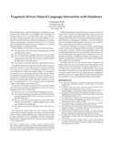

CIDR 2020
January 12-15 , 2020
Amsterdam, Netherlands
Menu:
Home
Call For Papers
Organization
Keynotes
Program
Venue and Registration
Previous Conferences
CIDR 2019
CIDR 2017
CIDR 2015
CIDR 2013
CIDR 2011
CIDR 2009
CIDR 2007
CIDR 2005
CIDR 2003
CIDR 2020 Gong Show
Monday January 13th

Automated Paraphrasing for Pure Natural Language Interaction with Databases
Christopher Baik (
University of Michigan
)
Aiming at real applications: Subsequence Outlier Detection on Mixed-Type Attributes Data in RDBMS
Fan Meng (
Nanjing University
)
A System for Studying Deep Network Training
Raul Castro Fernandez (
MIT
)
Parallel Traversal of Graphs Stored in RDBMSs
Christine F Reilly (
Skidmore College
)
Active Reinforcement Learning for Data Preparation: Learn2Clean with Human-In-The-Loop
Laure Berti-Equille (
AMU
)
Making DBMSes Dependency-Aware
George Chernishev (
Saint-Petersburg State University
)
Pixels: Multiversion Wide Table Store for Data Lakes
Haoqiong Bian (
Tencent
)
When sweet and cute isn't enough anymore: Solving scalability issues in Python Pandas with Grizzly
Stefan Hagedorn (
TU Ilmenau
)
We do not have Systems for Analysing IoT Big-Data
Yuya Sasaki (
Osaka University
)
CAFE: Constraint-Aware Feature Extraction from Large Databases
Ziawasch Abedjan (
TU Berlin
)
Efficient Hard Real-Time Transaction Processing - Unachievable in Software
Matheus A Nerone (
CWI
)